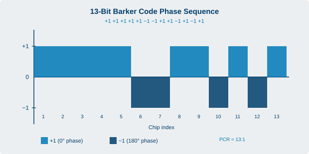
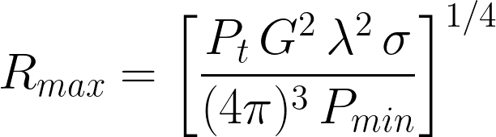

A short, curated glossary of the core radar and microwave terms used across this book. For the full reference list of more than 400 terms drawn from the source course material, see Appendix A.
Flagged for review. These definitions were written to match how each term is used in the chapters of this book. Verify any specification or numeric value against a current authoritative source before reuse.
AESA (Active Electronically Scanned Array)
An active phased array radar in which each antenna element, or small group of elements, has its own transmit and receive module, so the beam is steered electronically rather than by moving the antenna.
A plan-position-indicator display sweeps in azimuth, painting target returns around the antenna.
Azimuth
The horizontal bearing angle to a target, measured in the horizontal plane relative to a reference direction such as true north.

A 13-bit Barker code plotted as a bipolar phase sequence. Each chip is either +1 (0 deg) or minus-1 (180 deg). The autocorrelation sidelobes are no larger than 1/13 of the peak, giving a pulse compression ratio of 13:1.
Barker Code
A binary phase code used in pulse compression. The phase of each sub-pulse is switched between 0 and 180 degrees according to the code. The longest usable Barker code has 13 elements, giving a maximum compression ratio of 13:1.
Beamwidth sets the angular resolution of the focused beam a parabolic antenna projects.
Beamwidth
The angular width of the main lobe of an antenna pattern, usually measured between the half-power (minus 3 dB) points. Narrower beamwidth gives better angular resolution.
Clutter
Unwanted echoes, for example from ground, sea, rain, or buildings, that interfere with the observation of the desired target signal.
Coherence
A constant, predictable phase relationship between the transmitted and received pulses. Fully coherent radar derive all signals from one stable master oscillator, which enables sensitive Doppler processing and clutter rejection.
Continuous Wave (CW) Radar
A radar that transmits a high-frequency signal continuously and receives at the same time. An unmodulated CW radar measures radial velocity through the Doppler shift but cannot measure range.
Crossed-Field Amplifier (CFA)
A broadband, high-efficiency microwave amplifier with crossed electric and magnetic fields and an odd number of coupled cavities. Also known as the amplitron, platinotron, or stabilotron.
Christian Doppler (1803-1853), Austrian mathematician and physicist. He described in 1842 how the observed frequency of a wave changes with the relative motion between source and observer, a principle now fundamental to radar velocity measurement.
Doppler Effect
The change in observed frequency of an echo caused by relative motion between the radar and the target. It is the basis of speed measurement and moving-target detection.
Duplexer
A switching device that allows a single antenna to be shared between the transmitter and receiver, protecting the sensitive receiver during transmission.
Duty Cycle
The ratio of the transmitted pulse width to the pulse repetition time, that is, the fraction of time the transmitter is actually radiating. It links peak power to average power.
EIK (Extended Interaction Klystron)
A linear-beam velocity-modulated tube with multiple coupled-gap cavities that combines the ruggedness and high power of a klystron with the wider bandwidth of a coupled-cavity TWT, typically at millimeter-wave frequencies.
FMCW (Frequency-Modulated Continuous Wave)
A continuous wave radar whose transmitted frequency is swept over time, allowing range to be measured from the frequency difference between the transmitted and received signals.
Klystron
A linear-beam velocity-modulated vacuum tube used as a high-gain amplifier or oscillator. Variants include the two-cavity, multicavity, multi-beam, sheet-beam, and reflex (repeller) klystron.
Magnetron
A high-power, self-excited microwave oscillator that uses crossed electric and magnetic fields and resonant cavities in a copper anode block. Its output is non-coherent because each pulse starts with a random phase.
Monopulse
A tracking technique that derives target angle from a single pulse by comparing signals from multiple offset beams, giving precise and rapid angle measurement.
Phased Array
An antenna made of many radiating elements whose relative phases are controlled to steer and shape the beam electronically without mechanical movement.
Pulse Compression
A technique that transmits a long, frequency- or phase-modulated pulse and compresses the echo in the receiver, combining the energy of a long pulse with the range resolution of a short pulse. The improvement factor is the pulse compression ratio (PCR).
Pulse-Doppler Radar
A pulse radar that also measures the Doppler shift of echoes pulse to pulse, allowing it to separate moving targets from stationary clutter.
Pulse Repetition Frequency (PRF)
The number of pulses transmitted per second. It sets the maximum unambiguous range: a higher PRF shortens the listening time between pulses.
Pulse Repetition Time (PRT)
The time between the start of one transmitted pulse and the start of the next. It is the reciprocal of the PRF.
Radar Cross Section (RCS)
A measure of how detectable a target is to radar, equal to the area that would intercept and isotropically re-radiate enough power to produce the observed echo.

The radar range equation. Maximum detection range R_max (m) is the fourth root of transmitted power P_t (W), antenna gain G (dimensionless), wavelength lambda (m), target radar cross section sigma (m^2), and minimum detectable signal P_min (W).
Range Resolution
The ability of a radar to distinguish two targets that are close together in range. It improves with shorter (or effectively compressed) pulses.
SAR (Synthetic Aperture Radar)
An imaging radar that uses the motion of the platform to synthesize a large effective antenna aperture, producing much finer spatial resolution than a stationary beam.
SAW (Surface Acoustic Wave) Device
A piezoelectric component that propagates acoustic waves along its surface, used as a compact delay line and filter for pulse compression.
Thyratron
A gas-filled switching tube used in classic radar modulators to switch the high-voltage pulse on and off for the transmitter tube. Now largely replaced by solid-state switches.
Transponder
A transmitter-receiver carried by a target that, when interrogated by a secondary radar, replies with a coded message on a different frequency.
TWT (Traveling Wave Tube)
A linear-beam velocity-modulated tube used as a high-gain, low-noise, wide-bandwidth microwave amplifier, often as a radar receiver pre-amplifier or transmitter driver.
Waveform
The inner structure of the transmitted signal, ranging from simple on/off pulse modulation to complex intra-pulse frequency or phase modulation for pulse compression.
Waveguide
A hollow conducting tube that carries microwave energy with low loss between the transmitter, antenna, and receiver.